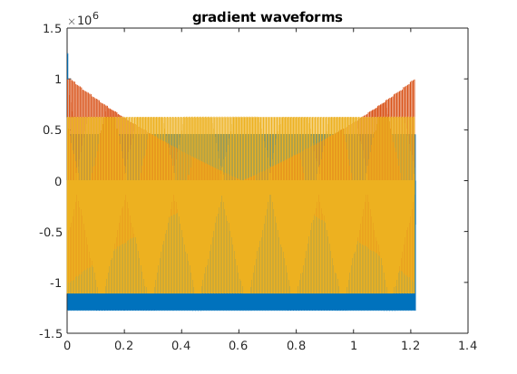

Contents
- check whether the timing of the sequence is correct
- prepare export
- plots and displays
- plot entire interpolated wave forms -- good for debugging of gaps, jumps,
- trajectory calculation
- very optional slow step, but useful for testing during development e.g. for the real TE, TR or for staying within slewrate limits
% we define here a really crude True-FISP a.k.a. bSSFP sequence % there is no user control for TR/TE, you just specify the ADC time and the % RF parameters and the rest is calculated to find the fastest posible % timing. The sequence intensively uses the extended trapezoid % functionality to achieve near-optimal timing. Due to the requirement for % splitting the sequence into blocks the TR is increased by approximately % 40-60 us (rfDeadTime+adcDeadTime) in comparison to the true minimum TR % set system limits % had to slow down ramps and increase adc_duration to avoid stimulation sys = mr.opts('MaxGrad',30,'GradUnit','mT/m',... 'MaxSlew',140,'SlewUnit','T/m/s',... 'rfRingdownTime', 20e-6, 'rfDeadTime', 100e-6, ... 'adcDeadTime', 20e-6); seq=mr.Sequence(sys); % Create a new sequence object fov=220e-3; Nx=256; Ny=256; % Define FOV and resolution % ADC duration (controls TR/TE) adc_dur=2560; %us % RF parameters alpha=40; % deg thick=4; %mm rf_dur=600; % us rf_apo=0.5; rf_bwt=1.5; % Create 'alpha' degree slice selection pulse and gradient [rf, gz, gzReph] = mr.makeSincPulse(alpha*pi/180,'Duration',rf_dur*1e-6,... 'SliceThickness',thick*1e-3,'apodization',rf_apo,'timeBwProduct',rf_bwt,'system',sys); % Define other gradients and ADC events deltak=1/fov; gx = mr.makeTrapezoid('x','FlatArea',Nx*deltak,'FlatTime',adc_dur*1e-6,'system',sys); adc = mr.makeAdc(Nx,'Duration',gx.flatTime,'Delay',gx.riseTime,'system',sys); gxPre = mr.makeTrapezoid('x','Area',-gx.area/2,'system',sys); phaseAreas = ((0:Ny-1)-Ny/2)*deltak; % now we have to reshuffle gradients to achieve a half-way optimal timing % new gz will consist of two parts: % 1: slice refocusing from the previous TR followed by slice selection % including the plato an a small bit of the ramp-down % 2: the remainder of the ramp-down and the slice refocusing for the next TR gz_parts=mr.splitGradientAt(gz,mr.calcDuration(rf)); gz_parts(1).delay=mr.calcDuration(gzReph); gz_1=mr.addGradients({gzReph,gz_parts(1)},'system',sys); [rf,~]=mr.align('right',rf,gz_1); gz_parts(2).delay=0; gzReph.delay=mr.calcDuration(gz_parts(2)); gz_2=mr.addGradients({gz_parts(2),gzReph},'system',sys); % new gr will consist of two parts: % 1: prephaser followed by a part of the read gradient including the % beginning of the ramp-down % 2: the remainer of the ramp-down and the second "prephaser" gx_parts=mr.splitGradientAt(gx,ceil(mr.calcDuration(adc)/sys.gradRasterTime)*sys.gradRasterTime); gx_parts(1).delay=mr.calcDuration(gxPre); gx_1=mr.addGradients({gxPre,gx_parts(1)},'system',sys); adc.delay=adc.delay+mr.calcDuration(gxPre); % we cannot use mr.align here because the adc duration maz be not aligneed to the grad raster gx_parts(2).delay=0; gxPre.delay=mr.calcDuration(gx_parts(2)); gx_2=mr.addGradients({gx_parts(2),gxPre},'system',sys); % Calculate timing %pe_dur=min(max(tp2(end),tpr1(end-2)),max(tp(end-3),tpr2(end))); gxPre.delay=0; % otherwise duration below is misreported %pe_dur=max(mr.calcDuration(gz_2),mr.calcDuration(gxPre)+gx.riseTime); pe_dur=mr.calcDuration(gx_2); % adjust delays to align objects %gz_1.delay=max(mr.calcDuration(gx_2)-rf.delay,0); gz_1.delay=max(mr.calcDuration(gx_2)-rf.delay+rf.ringdownTime,0); % this rf.ringdownTime is needed to center the ADC and the gradient echo in the center of RF-RF period rf.delay=rf.delay+gz_1.delay; % finish timing calculation TR=mr.calcDuration(gz_1)+mr.calcDuration(gx_1); TE=TR/2; % alpha / 2 preparation: shorter TR and half-angle, no PE, no RO % create 0.5*alpha prep pulse rf05=rf; rf05.signal=0.5*rf.signal; seq.addBlock(rf05,gz_1,mr.makeLabel('SET','ONCE', 1)); % we also label the few following blocks as preparing to exclude them if the sequence is repeated % the following delay calculation fails for agressive sequence timing prepDelay=mr.makeDelay(round((TR/2-mr.calcDuration(gz_1))/sys.gradRasterTime)*sys.gradRasterTime); % I know this round() is not 100% correct gx_1_1=mr.makeExtendedTrapezoidArea('x',0,gx_2.first,-gx_2.area,sys); gyPre_2 = mr.makeTrapezoid('y','Area',phaseAreas(end),'Duration',pe_dur,'system',sys); % last PE step (in case of repetitions) seq.addBlock(mr.align('left',prepDelay,gz_2,gyPre_2,'right',gx_1_1)); seq.addBlock(mr.makeLabel('SET','ONCE', 0)); % remove preparing block label % Loop over phase encodes and define sequence blocks for i=1:Ny rf.phaseOffset=pi*mod(i,2); adc.phaseOffset=pi*mod(i,2); gyPre_1 = mr.scaleGrad(gyPre_2,-1); % undo previous PE step gyPre_2 = mr.makeTrapezoid('y','Area',phaseAreas(i),'Duration',pe_dur,'system',sys); % current PE step seq.addBlock(rf,gz_1, gyPre_1, gx_2); seq.addBlock(gx_1,gyPre_2, gz_2,adc); end % finish the x-grad shape seq.addBlock(gx_2,mr.makeLabel('SET','ONCE', 2)); % we also label this block as the exit block, which excludes it from all but last repetitions if the sequence is repeated % check that the calculated TR was reached % alpha / 2 prep takes 4 blocks assert(TR==(mr.calcDuration(seq.getBlock(5))+mr.calcDuration(seq.getBlock(6)))); fprintf('Sequence ready\n'); fprintf('TR=%03f ms TE=%03f ms\n', TR*1e3, TE*1e3);
Sequence ready TR=4.740000 ms TE=2.370000 ms
check whether the timing of the sequence is correct
[ok, error_report]=seq.checkTiming; if (ok) fprintf('Timing check passed successfully\n'); else fprintf('Timing check failed! Error listing follows:\n'); fprintf([error_report{:}]); fprintf('\n'); end
Timing check passed successfully
prepare export
seq.setDefinition('FOV', [fov fov thick*1e-3]); seq.setDefinition('Name', 'trufi'); seq.write('trufi.seq') % Write to pulseq file %seq.install('siemens');
plots and displays
seq.plot('timeDisp','us');
plot entire interpolated wave forms -- good for debugging of gaps, jumps,
etc, but is relatively slow
%gw=seq.gradient_waveforms(); %figure; plot(gw'); % plot the entire gradient waveform gw_data=seq.waveforms_and_times(); figure; plot(gw_data{1}(1,:),gw_data{1}(2,:),gw_data{2}(1,:),gw_data{2}(2,:),gw_data{3}(1,:),gw_data{3}(2,:)); % plot the entire gradient waveform title('gradient waveforms');
trajectory calculation
[ktraj_adc, t_adc, ktraj, t_ktraj, t_excitation, t_refocusing] = seq.calculateKspacePP(); % plot k-spaces figure; plot(t_ktraj,ktraj'); title('k-space components as functions of time'); % plot the entire k-space trajectory figure; plot(ktraj(1,:),ktraj(2,:),'b',... ktraj_adc(1,:),ktraj_adc(2,:),'r.'); % a 2D plot title('2D k-space');


very optional slow step, but useful for testing during development e.g. for the real TE, TR or for staying within slewrate limits
rep = seq.testReport;
fprintf([rep{:}]);
Number of blocks: 516 Number of events: RF: 257 Gx: 514 Gy: 513 Gz: 514 ADC: 256 Sequence duration: 1.216560s TE: 0.002370s TR: 0.004740s Flip angle: 20.00° Flip angle: 40.00° Unique k-space positions (a.k.a. columns, rows, etc): 256 Unique k-space positions (a.k.a. columns, rows, etc): 256 Dimensions: 2 Spatial resolution: 0.86 mm Spatial resolution: 0.86 mm Repetitions/slices/contrasts: 1 range: [1 1] 65536 k-space position(s) repeated 1 times Cartesian encoding trajectory detected Block timing check passed successfully Max. Gradient: 1276596 Hz/m == 29.98 mT/m Max. Gradient: 1003135 Hz/m == 23.56 mT/m Max. Gradient: 1109375 Hz/m == 26.06 mT/m Max. Slew Rate: 5.80271e+09 Hz/m/s == 136.29 T/m/s Max. Slew Rate: 5.9596e+09 Hz/m/s == 139.98 T/m/s Max. Slew Rate: 5.68182e+09 Hz/m/s == 133.45 T/m/s Max. Absolute Gradient: 1966390 Hz/m == 46.19 mT/m Max. Absolute Slew Rate: 1.00733e+10 Hz/m/s == 236.60 T/m/s